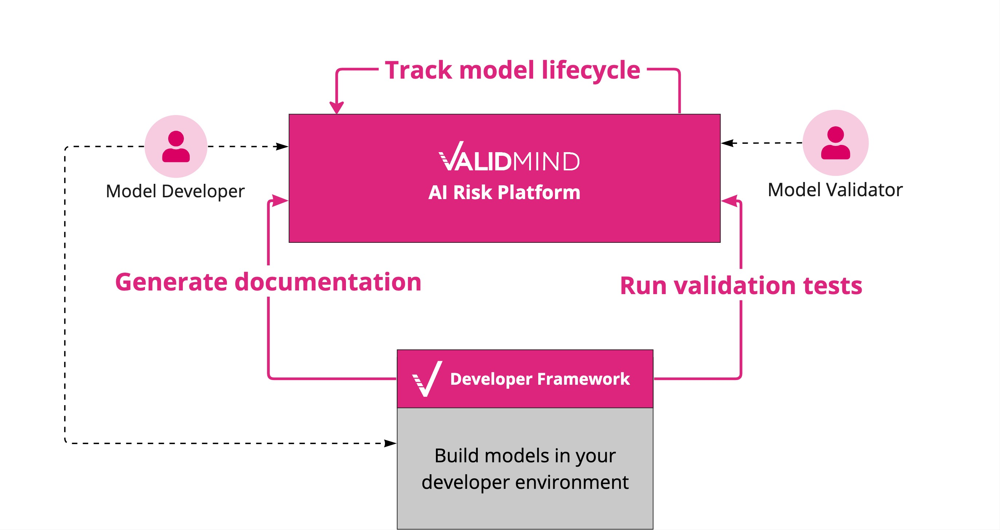

graph LR
A[New model<br>registration] --> B[Initial<br>validation]
B --> C[Validation<br>approval]
C --> D[In production]
D --> E[Periodic review<br>and revalidation]
E --> B
Get started
Welcome to ValidMind!
ValidMind is a platform designed to simplify key aspects of managing the risk for AI and machine learning models for model developers and model validators alike.
How do I get access to ValidMind?
If you want to try out our products, request a trial.
What is the ValidMind platform?
Model developers and validators play vital roles in managing model risk, especially when subject to regulations. They are tasked with the careful documentation, testing, and independent validation of the models they build, ensuring the firm’s model risk management principles are implemented throughout the entire model lifecycle.
ValidMind provides various tools to assist you in the process of documenting and validating models, regardless of the technology platform used to build them.

ValidMind provides two main products components:
The Developer Framework is a library of tools and methods designed to automate model documentation and testing. It is platform agnostic, and integrates with your existing model development environment.
For Python developers, a simple install gets you all of the functions:
pip install validmindThe ValidMind AI Risk Platform is an easy-to-use web-based UI with the following capabilities:
- Offers customizable workflows for your model inventory to manage the model documentation and validation process throughout the model lifecycle.
- Enables you to review and edit the documentation and test metrics generated by the Developer Framework online.
- Enables collaboration and feedback capture between model developers and model validators.
For more information about the benefits that ValidMind can offer, check out the ValidMind overview.
Key ValidMind concepts
- Documentation project
- All documentation work in ValidMind is organized into projects which act as a container for the model documentation and validation report of your model. Each stage of the model’s lifecycle constitutes a new project and can be configured with its own templates and workflows.
- Template
- Functions as a test suite and lays out the structure of model documentation, segmented into various sections and sub-sections. ValidMind templates come with pre-defined sections, similar to test placeholders, including boilerplates and spaces designated for documentation and test results:
- Model documentation is populated when a user successfully executes all the tests contained in a template, thereby completing the test suite. Template placeholders get populated with content generated by the ValidMind Developer Framework.
- Essentially, our platform scans these templates, identifies all tests and systematically organizes them into a well-structured test suite.
The criteria for these templates are typically provided by your model risk management team. They can be programmatically customized to suit the unique requirements of each model use case, a task usually performed by an administrator.
- Tests
- A function contained in the ValidMind Developer Framework, which is designed to run a specific quantitative test on the dataset or model. Test results are sent to the ValidMind Platform to generate the model documentation according to the relevant templates.
How do I get started?
Tracking the model lifecycle
A typical high-level model lifecycle workflow looks like this:
- New model registration
- Model owners and validators use the model inventory to manage all metadata associated with a model, including compliance and regulatory attributes. Users select a documentation template when registering a new inventory model.
- Initial validation
- Triggers a new documentation workflow, resulting in a model that is ready for production deployment after its documentation and validation reports are approved. See Track the documentation workflow for more details.
- Validation approval
- Perform validation of the model to ascertain that it meets the needs for which it was designed. ValidMind can connect to third-party systems to send events when a model has been approved for production.
- In production
- Use the model in production while ensuring its ongoing reliability, accuracy, and compliance with regulations by monitoring the model’s performance.
- Periodic review and revalidation
- As part of regular performance monitoring or change management, developers and validators follow a process similar to that seen in the Initial validation step
Tracking the documentation workflow
On the ValidMind platform, everything starts with the model inventory: you first register a new model and then manage the model lifecycle through the different activities that are part of your existing model risk management process.
Out of the box, the documentation project workflow for models looks like this:
graph LR
A[In documentation] --> B[In validation]
B --> C[In review /<br>under approval]
C --> D[Approved]
- In documentation
- Model developers use the ValidMind Developer Framework to run validation tests and automate model documentation. They then use the ValidMind UI to populate qualitative documentation sections. This phase is the most critical and involved for model developers.
To learn more about documenting models, check Get started with the Developer Framework.
- In validation
- Model validators review the model documentation and challenge the model:
- By using ValidMind UI to drive Q & A comments and collect more information from developers
- By using the ValidMind Developer Framework to replicate the test results and conduct their own testing
Validators then use the ValidMind UI to prepare a validation report and manage any findings discovered during the model review process.
- In review / under approval
- Senior risk managers and executives use ValidMind UI to review validation report and findings to make a final decision
- Approved
- the model can now transition to its next state, i.e. “Validation Approved.”
Next steps
The fastest way to explore what ValidMind can offer is with our Quickstart, where you can:
- Try out our Developer Framework with a code sample
- Explore the ValidMind Platform UI
If you have already tried the Quickstart, more how-to instructions and links to our FAQs can be found under Next steps.